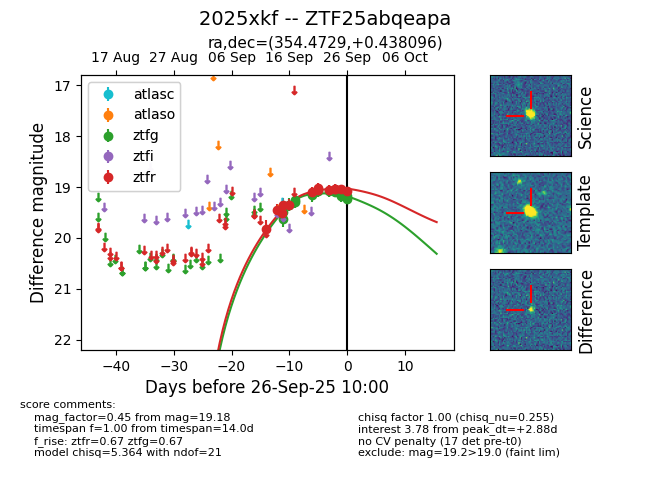
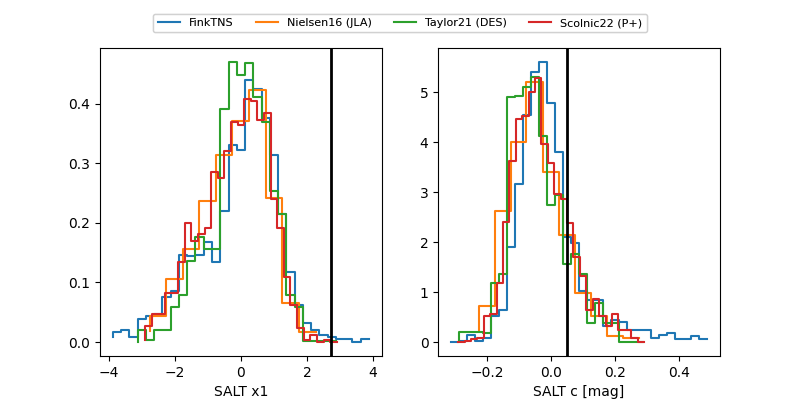

FINK: ZTF25abqeapa
Lasair: ZTF25abqeapa
ALeRCE: ZTF25abqeapa
TNS: 2025xkf
YSE: 2025xkf
ZTF25abqeapa (ztf,fink)
2025xkf (tns,yse)
equatorial (ra, dec) = (354.4729,+0.43810)
galactic (l, b) = (87.2658,-57.25041)


last ztfg=19.18, ztfr=19.08
13 ztfg, 13 ztfr detections